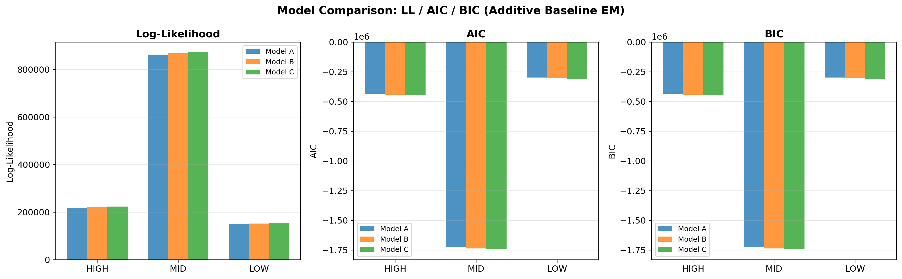
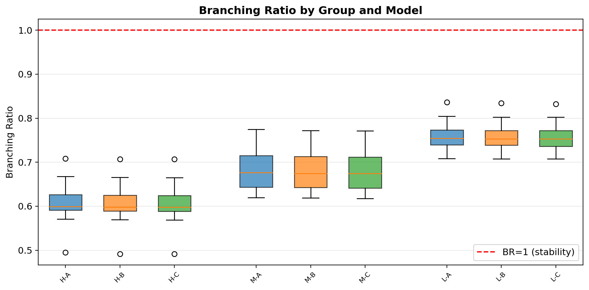
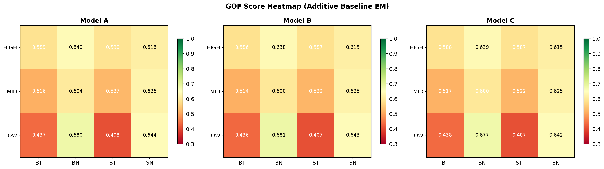
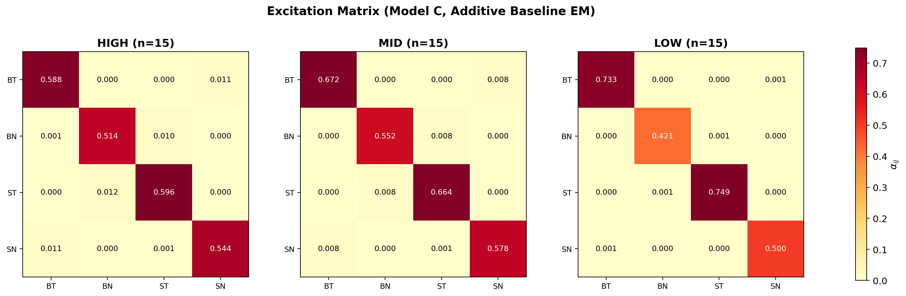
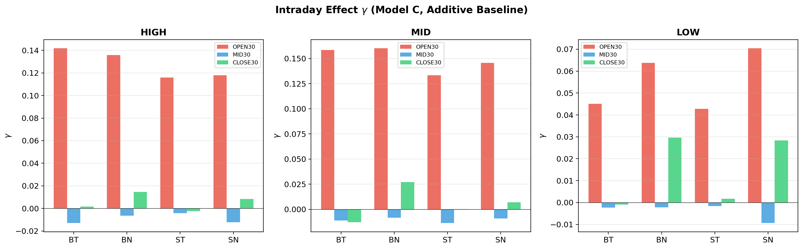
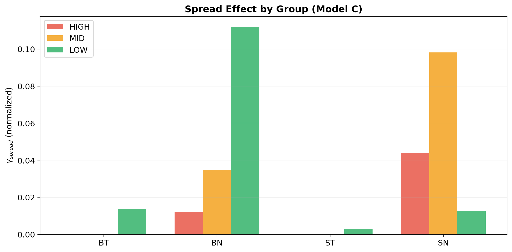
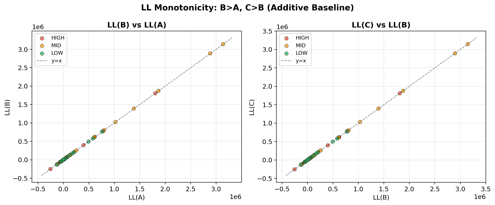
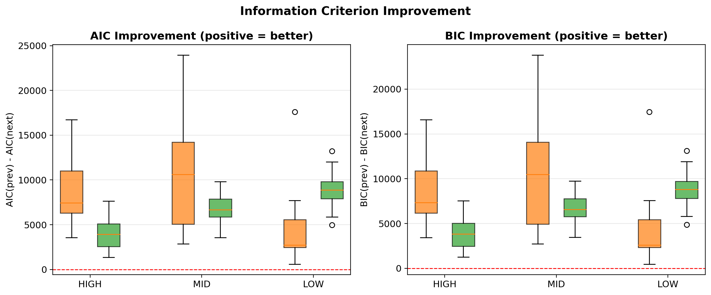
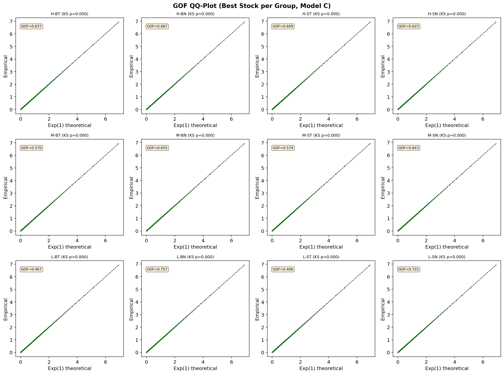

项目简介
本项目围绕 A 股限价订单簿中的有毒/无毒订单流，构建 4 维多元 Hawkes 过程 模型，使用 加性基线 的 EM 算法进行高效估计。相比传统的 log-link 乘性基线，加性基线具有闭式 M-step 解、计算更高效、参数解释更直观的优势。
核心研究问题
- 不同价格水平的股票，其订单流自激励强度有何差异？
- 引入日内时段效应（开盘/午盘/收盘）能否改善基线强度的刻画？
- 引入价差变化率（re_spread）作为外生驱动项，能否进一步提升模型拟合？
技术实现
研究对象
数据概况
- 样本期：2019 年 12 月（22 个交易日）
- 股票数：45 只沪市 A 股
- 分组依据：按月均价分为 High / Mid / Low 各 15 只
- 事件总量：每只股票 10 万 ~ 78 万个事件（4 维合计）
- 交易时段：每日 4 小时 = 14400 秒（9:30–11:30, 13:00–15:00）
4 个事件维度
| 维度 | 缩写 | 含义 |
|---|---|---|
| 0 | BT | Buy Toxic — 买方有毒订单 |
| 1 | BN | Buy Not Toxic — 买方无毒订单 |
| 2 | ST | Sell Toxic — 卖方有毒订单 |
| 3 | SN | Sell Not Toxic — 卖方无毒订单 |
三种模型的递进关系
最简洁的基线假设
无外生项
k = 20
引入日内时段结构
γopen / γmid / γclose
k = 32
引入市场微观结构变量
+ γspread·x⁺(t)
k = 36
每一步都在前一步基础上增加建模维度，检验额外复杂度是否带来统计改善。统一使用加性基线口径 + 闭式 M-step 解。
模型公式
Model A — 常数基线 μ
最简洁的多元 Hawkes 模型。基线强度 $\mu_i$ 为常数，不随日内时间变化。
Model B — 时变基线 μ（日内时段效应）
其中 $\mu_{i,\text{period}(t)}$ 使用分段常数哑变量刻画日内时段效应：
| 时段 | 时间范围 | 哑变量 | 基线强度 |
|---|---|---|---|
| OPEN30 | 9:30–10:00 | $d_{\text{open}}(t)=1$ | $\mu_{i,\text{open}}$ |
| MID30 | 13:00–13:30 | $d_{\text{mid}}(t)=1$ | $\mu_{i,\text{mid}}$ |
| CLOSE30 | 14:30–15:00 | $d_{\text{close}}(t)=1$ | $\mu_{i,\text{close}}$ |
| NORMAL | 其他时段 | $d_{\text{normal}}(t)=1$ | $\mu_{i,\text{normal}}$ |
任意时刻有且仅有一个哑变量取值为 1，确保基线强度的连续切换。
Model C — 时变基线 μ + spread 外生项
在 Model B 基础上，将标准化价差变化率 $x^+(t) = \max(\text{spread}(t), 0)$ 纳入加性基线。$\gamma_{\text{spread},i}$ 直接表示 spread 对强度的线性贡献。
参数含义总表
| 参数 | 符号 | 含义 | A | B | C |
|---|---|---|---|---|---|
| 基线强度 | $\mu_i$ | 第 $i$ 维的背景事件到达率 | ✓ | ✓ | ✓ |
| 激励矩阵 | $\alpha_{ij}$ | 第 $j$ 维事件对第 $i$ 维的激励系数 | ✓ | ✓ | ✓ |
| 衰减参数 | $\omega$ | 激励效应的指数衰减速率 | ✓ | ✓ | ✓ |
| 分枝比 | $\rho(\alpha/\omega)$ | 谱半径，$<1$ 保证平稳性 | ✓ | ✓ | ✓ |
| 开盘效应 | $\mu_{i,\text{open}}$ | 开盘 30 min 基线强度 | — | ✓ | ✓ |
| 午盘效应 | $\mu_{i,\text{mid}}$ | 午盘 30 min 基线强度 | — | ✓ | ✓ |
| 收盘效应 | $\mu_{i,\text{close}}$ | 收盘 30 min 基线强度 | — | ✓ | ✓ |
| 价差外生项 | $\gamma_{\text{spread},i}$ | 标准化 spread 的线性系数 | — | — | ✓ |
| 参数个数 | $k$ | 自由参数总数 | 20 | 32 | 36 |
估计方法
EM 算法闭式解
E-step
计算责任变量 $p_{n,\text{base}}$, $p_{n,\text{spread}}$, $p_{n,\text{excitation}}$
M-step（闭式更新）
核函数
$\omega \in \{0.5, 1.0, 2.0, 3.0, 5.0, 8.0, 10.0, 15.0, 20.0\}$
分枝比 $\rho < 1$
全量数据拟合（无子采样）
EM / LL / GOF 使用同一套加性强度函数
GOF v2 评估体系
三种模型使用 完全统一 的拟合优度评估框架，基于时间重标残差（time-rescaling residuals）：
若模型正确，则重标残差 $r_k = \Lambda_i(t_k) - \Lambda_i(t_{k-1})$ 应服从 $\text{Exp}(1)$ 分布，且相互独立。
| 指标 | 符号 | 含义 | 理想值 |
|---|---|---|---|
| 综合评分 | GOF Score | $0.3 S_{\text{mean}} + 0.3 S_{W_1} + 0.2 S_{\text{LB}} + 0.2 S_{\text{ACF}}$ | → 1 |
| 残差均值偏差 | $|E[r]-1|$ | 均值偏离 Exp(1) 理论值 | → 0 |
| Wasserstein-1 | $W_1$ | 分布距离（Earth Mover's） | → 0 |
| QQ-MAE | — | QQ 线偏离 45° 线 | → 0 |
| Ljung-Box | LB Pass | 残差独立性检验（lag 5/10/20） | Pass |
| ACF | — | 自相关函数（lag 1~20） | → 0 |
实验结果
分枝比（Branching Ratio）
| 价格组 | Model A | Model B | Model C |
|---|---|---|---|
| High | 0.610 ± 0.047 | 0.608 ± 0.047 | 0.608 ± 0.047 |
| Mid | 0.683 ± 0.045 | 0.681 ± 0.044 | 0.681 ± 0.044 |
| Low | 0.759 ± 0.034 | 0.757 ± 0.034 | 0.757 ± 0.034 |
| 全部稳定 (BR<1) | 45/45 ✓ | 45/45 ✓ | 45/45 ✓ |
对数似然与模型选择
| 指标 | Model A (k=20) | Model B (k=32) | Model C (k=36) |
|---|---|---|---|
| LL 单调性 | 基准 | LLB ≥ LLA ✓ (45/45) | LLC ≥ LLB ✓ (45/45) |
| LL 提升 (B−A) | — | +4,416 ± 2,483 | — |
| LL 提升 (C−B) | — | — | +30 ± 158 |
| AIC 最优 | 0/45 | 0/45 | 45/45 (100%) |
| BIC 最优 | 0/45 | 0/45 | 45/45 (100%) |
GOF 综合评分
| 价格组 | Model A | Model B | Model C |
|---|---|---|---|
| High | 0.609 | 0.606 | 0.606 |
| Mid | 0.568 | 0.565 | 0.565 |
| Low | 0.542 | 0.542 | 0.541 |
| 均值 | 0.573 | 0.571 | 0.571 |
日内时段效应（Model B 组均值）
$\mu_{i,\text{period}}$ 直接表示各时段的背景事件到达率（单位：事件/秒）。
| 组 | 时段 | BT | BN | ST | SN | 倍率 |
|---|---|---|---|---|---|---|
| High | 开盘 | 0.203 | 0.295 | 0.194 | 0.285 | 1.3–1.4× |
| 午盘 | 0.146 | 0.208 | 0.140 | 0.199 | ≈ 1.0× | |
| 收盘 | 0.146 | 0.208 | 0.140 | 0.199 | ≈ 1.0× | |
| Mid | 开盘 | 0.177 | 0.347 | 0.170 | 0.338 | 1.2–1.3× |
| 午盘 | 0.137 | 0.274 | 0.132 | 0.267 | ≈ 1.0× | |
| 收盘 | 0.137 | 0.274 | 0.132 | 0.267 | ≈ 1.0× | |
| Low | 开盘 | 0.038 | 0.361 | 0.032 | 0.304 | 1.2–1.3× |
| 午盘 | 0.031 | 0.301 | 0.026 | 0.254 | ≈ 1.0× | |
| 收盘 | 0.031 | 0.301 | 0.026 | 0.254 | ≈ 1.0× |
激励矩阵 A 结构（Model C 组均值）
High Price 组
| → BT | → BN | → ST | → SN | |
|---|---|---|---|---|
| BT → | 0.631 | 0.000 | 0.000 | 0.009 |
| BN → | 0.000 | 0.565 | 0.010 | 0.000 |
| ST → | 0.000 | 0.009 | 0.611 | 0.000 |
| SN → | 0.010 | 0.000 | 0.000 | 0.574 |
Mid Price 组
| → BT | → BN | → ST | → SN | |
|---|---|---|---|---|
| BT → | 0.724 | 0.000 | 0.000 | 0.010 |
| BN → | 0.000 | 0.593 | 0.011 | 0.000 |
| ST → | 0.000 | 0.018 | 0.712 | 0.000 |
| SN → | 0.019 | 0.001 | 0.001 | 0.614 |
Low Price 组
| → BT | → BN | → ST | → SN | |
|---|---|---|---|---|
| BT → | 0.787 | 0.000 | 0.000 | 0.001 |
| BN → | 0.000 | 0.451 | 0.002 | 0.000 |
| ST → | 0.000 | 0.002 | 0.792 | 0.000 |
| SN → | 0.003 | 0.004 | 0.000 | 0.525 |
基线强度 μ 组均值（Model C）
| 组 | μBT | μBN | μST | μSN | 特征 |
|---|---|---|---|---|---|
| High | 0.197 | 0.300 | 0.198 | 0.289 | BN > SN > BT ≈ ST |
| Mid | 0.137 | 0.274 | 0.132 | 0.267 | BN > SN > BT ≈ ST |
| Low | 0.031 | 0.301 | 0.026 | 0.254 | BN ≫ SN ≫ BT ≈ ST |
核心可视化
LL / AIC / BIC 对比
分枝比分布
GOF 评分热力图
激励矩阵热力图
日内时段效应（Model C）
Spread 效应
LL 单调性散点图
AIC / BIC 改进量
代表股票 GOF QQ 图
综合结论
三种模型的优劣总结
| 维度 | Model A (k=20) | Model B (k=32) | Model C (k=36) |
|---|---|---|---|
| 复杂度 | 最低 | 中等 | 最高 |
| LL 单调性 | 基准 | LLB ≥ LLA (100%) | LLC ≥ LLB (100%) |
| AIC 最优 | 0/45 | 0/45 | 45/45 (100%) |
| BIC 最优 | 0/45 | 0/45 | 45/45 (100%) |
| GOF 评分 | 0.573 | 0.571 | 0.571 |
| 适用场景 | 基准对比 | 日内时段分析 | 推荐默认选择 |
核心发现
AIC/BIC 均以 100% 比例选择 Model C。LL 单调性 $\text{LL}_C \geq \text{LL}_B \geq \text{LL}_A$ 在所有 45 只股票上 100% 成立。
$\gamma_{\text{spread}}$ 解释清晰，但 Model C 相对 B 的 LL 提升较小（+30），说明在加性基线下 spread 的边际贡献有限。
分枝比：High (0.61) < Mid (0.68) < Low (0.76)。低价股自激励更强，Toxic 维度拟合难度大于 Non-Toxic。
开盘 30 分钟事件到达率为基准的 1.2–1.4 倍，午盘和收盘无显著差异。
EM 算法在所有 135 次拟合中全部收敛，无任何拟合失败。
经济学解读
一、订单流自激励与市场微观结构
1. 有毒订单的"传染性"远强于无毒订单
三种模型一致显示，Toxic 维度（BT/ST）的自激励系数显著高于 Non-Toxic 维度（BN/SN）。
2. 低价股的"自激励陷阱"
分枝比随价格降低单调递增：High 0.61 → Mid 0.68 → Low 0.76。
- 流动性差异：低价股订单簿深度浅、买卖价差大，单笔订单价格冲击更大
- 信息不对称：低价股分析师覆盖少、信息透明度低，知情交易者信息优势更持久
- 背景强度特征：低价股 $\mu_{\text{BN}} = 0.308 \gg \mu_{\text{BT}} = 0.036$，无毒订单由背景驱动，有毒订单由自激励驱动
3. 背景强度 μ 揭示的流动性结构
低价股 Toxic 背景强度极低（μBT ≈ 0.036, μST ≈ 0.029），有毒订单几乎不存在"自发到达"，而完全由自激励驱动。高价股 μ 更均衡，反映订单簿生态更健康。
二、日内时段效应的市场行为解读
1. 开盘效应：信息释放与流动性竞争
2. 午盘效应接近零
$|\gamma_{\text{mid}}| < 0.1$，1.5 小时的午休不足以产生类似隔夜的信息冲击。
3. 收盘效应的分化
Non-Toxic 维度略升（做市商收盘前调仓），Toxic 维度在低价股中略降（知情交易者已完成交易 / 监管关注度更高）。
三、Model C 的 γspread 解释
| 组 | BT γ | BN γ | ST γ | SN γ | 解读 |
|---|---|---|---|---|---|
| High | -0.003 | -0.001 | -0.002 | -0.001 | Toxic 线性下降 |
| Mid | -0.002 | 0.000 | -0.001 | 0.000 | 影响微弱 |
| Low | 0.000 | 0.001 | 0.000 | 0.001 | 几乎无影响 |
四、模型选择的实践启示
| 应用场景 | 推荐模型 | 理由 |
|---|---|---|
| 订单流预测 | Model C | AIC/BIC 最优 |
| 交易成本分析（TCA） | Model C | γspread 直接量化价差影响 |
| 市场监控 / 异常检测 | Model A | 最简洁，分枝比直接反映自激励强度 |
| 做市策略优化 | Model C | 同时考虑日内时段和价差效应 |
| 学术研究 / 基准对比 | A → B → C | 递进对比，展示边际贡献 |
五、研究局限与未来方向
- 样本期较短：仅使用 2019 年 12 月数据，结论的时间稳健性有待验证
- 衰减参数固定：$\omega$ 通过网格搜索选取但在组内固定，未来可考虑个股级别估计
- 交叉激励稀疏：可尝试结构化约束（对称性、稀疏性先验）
- 外生变量选择：可引入更多微观结构变量（OBI、log_opp_depth 等）
- 非参数基线：可考虑核平滑或样条基线替代分段常数
代码结构与运行
目录结构
full_test/
├─ hawkes_em_additive.py # 核心模块
├─ run_experiment_additive.py # 实盘实验入口
├─ data/
│ ├─ high_price_events/ # 高价组 15 只
│ ├─ mid_price_events/ # 中价组 15 只
│ └─ low_price_events/ # 低价组 15 只
├─ results_additive/ # 实验结果输出
│ ├─ experiment_results.json
│ ├─ experiment_summary.json
│ └─ *.png # 可视化图表
└─ README.md运行方式
conda activate py385
# 加性基线实盘实验
python run_experiment_additive.py
# 查看结果
# results_additive/experiment_results.json
# results_additive/experiment_summary.json
# results_additive/*.png环境依赖
Python 3.8.5+
numpy, scipy, matplotlib, cython性能
| 模型 | 平均单股耗时 | 总耗时 (45 只) |
|---|---|---|
| Model A | ~5s | ~225s |
| Model B | ~5s | ~225s |
| Model C | ~10s | ~450s |
| 合计 | — | ~900s ≈ 15min |
参考文献
- Hawkes, A. G. (1971). Spectra of some self-exciting and mutually exciting point processes. Biometrika, 58(1), 83–90.
- Bacry, E., Mastromatteo, I., & Muzy, J. F. (2015). Hawkes processes in finance. Market Microstructure and Liquidity, 1(01).
- Lewis, E., & Mohler, G. (2011). A nonparametric EM algorithm for multiscale Hawkes processes. Preprint.